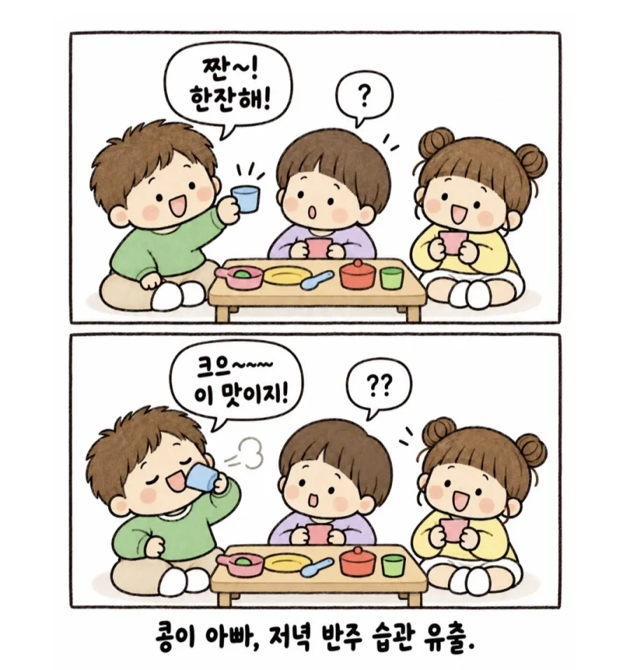
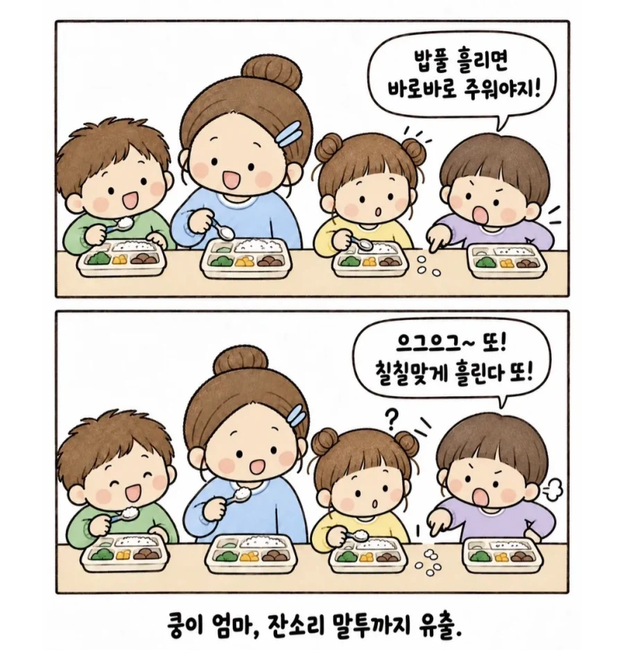
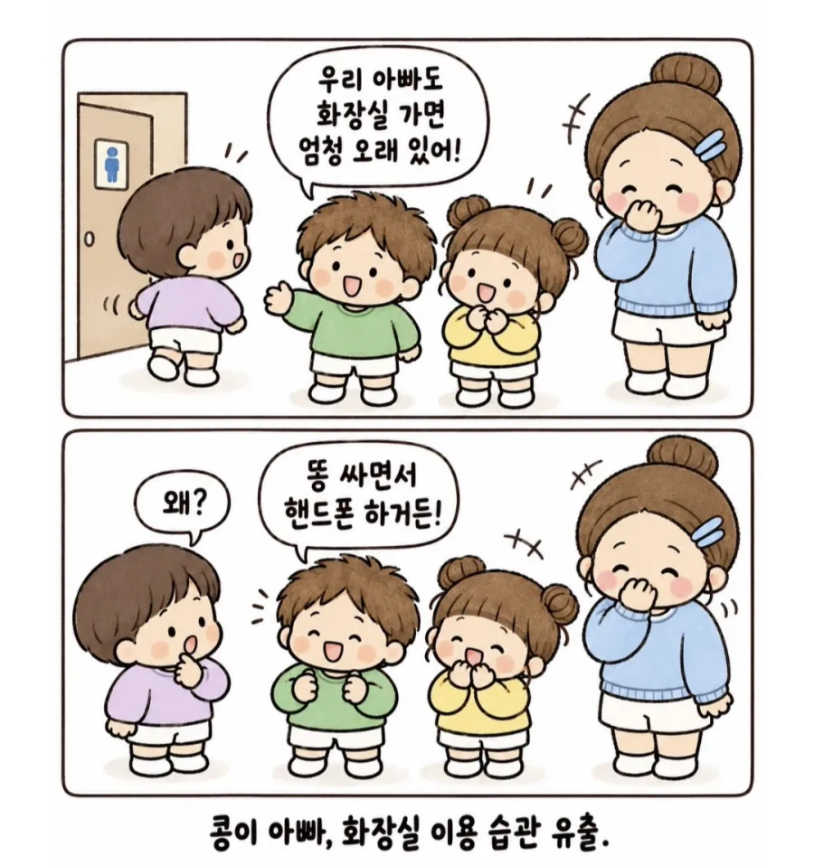
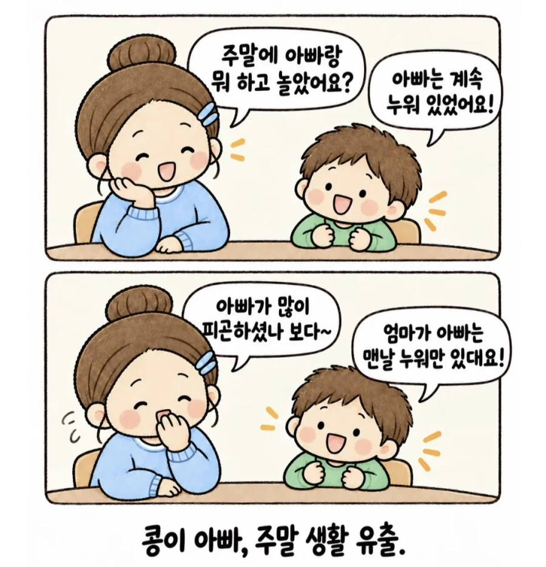
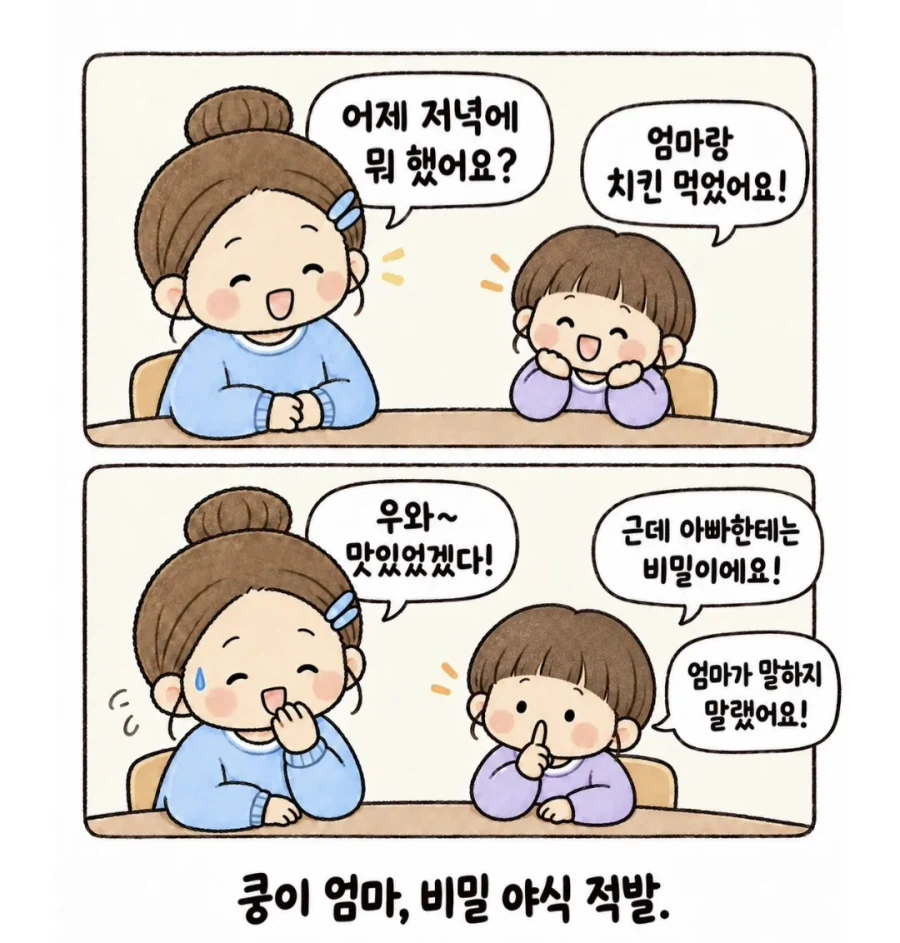
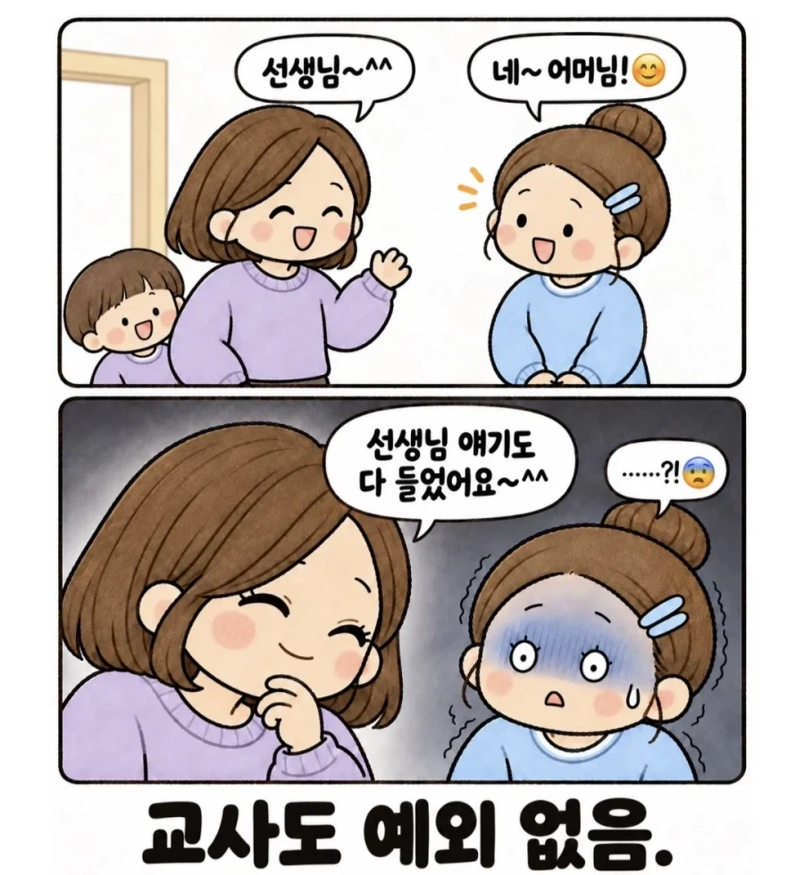

😨
이건 정보를 흘리는 박쥐놈이 있다는 뜻이군... 보스는 놈을 처리하라고 하셨다.
스니치.....
저래서 어른들이 애 앞에서는 물도 제대로 못마신다고 ㅋㅋㅋ
ㅇㅆㅇㅆ
우리 애는 어린이집에서 있는 일 이야기하나도 안 함. 물어봐도 모른데.. 근데 친구 엄빠들하고 이야기하다보니 내 얘기는 존나게 하나보더라.. 이 써글롬아..
아들?
A급 스파이로구만
애들 앞에 비밀은 없다 ㅋㅋㅋㅋ

진실만 말하면 그나마 다행
어릴 때는 거짓말이 어떤 영향을 불러일으키는지, 가끔은 본인이 말하는 게 상상인지 현실인지 분간도 잘 못해서 허구를 말할 때도 있음. 어른의 반응이 재밌으면 더더욱
그래서 아이가 말하는 순수악에 가까운 거짓말이 어른들의 갈등으로 번지는 경우도 있음
조카 다니는 어린이집에서 운 한번 띄우더라... 좀 더 지나면 애들이 거짓말 할 시기가 되는데 이게 정상적인 발달 과정 중 하나라고
귀여워 ㅋㅋㅋㅋㅋㅋ
어제 엄마랑 아빠랑 레슬링 했어요!
스터너
외국에 그거 생각남 부부가 남자인가? 그 사람이 죽었는데 경찰이 부인이 범인인지 여부를 두고 증거를 못잡고 전전긍긍하고 있었음 근데 씨씨티비인가 돌려보니까 마침 그 부부가 앵무새 키우고 있었는데 그 앵무새가 그날 부부가 부부싸움하고 있었는데 남자가 하지마 하고 저항하던걸 앵무새가 녹음본마냥 뱉어낸거임 그래서 경찰이 그거보고 바로 아내 구속한거 본거같음
보스, 그 쬐깐이는 너무 많은걸 알아버렸습니다.
요즘 우리 딸이 나보고 자기야 라고부름ㅋㅋㅋㅋ
내 두눈으로 똑똑히 봤슈 어린이집버젼